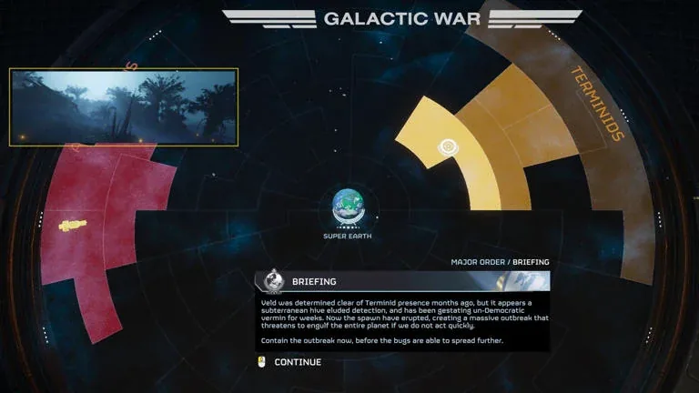

Veld/Battles
维尔德第一次战役——猎户座分区战役
| First Battle of Veld | |
|---|---|
| 阵营 | |
| Start Date | Feb. 29th |
| End Date | Feb. 29th |
| 行星 | Veld |
| 操作 | 操作 英勇 Enclosure |
| Group | |
| Casualties | Around 500 thousand 绝地潜兵 K.I.A. |
| 重要指令 | 英勇包围行动 第一阶段 |
| Summary | Veld liberated. |
背景
Recently, Angel's Venture 和 Heeth were liberated, as they were a part of 主要命令. To liberate Orion 分区, 绝地潜兵 had to liberate Veld, the new 目标 of a 重要指令.
战略与重要性
The Battle was 重要, as capturing Veld would push 终结族 out of the Orion 分区, also Veld was a 目标 of a 重要指令.
战斗
Battle was fast, 绝地潜兵 liberated Veld from 终结族 infestatation quickly. The bugs were pushed out of the Orion 分区 for a month, until the second battle of Veld.

维尔德第二次战役——再次确保猎户座分区安全
| Second Battle of Veld | |
|---|---|
| 阵营 | |
| Start Date | 5月6日 |
| End Date | May. 10th
May. 9th Depending on the timezone |
| 行星 | Veld |
| 操作 | |
| Group | |
| Casualties | 约150万绝地潜兵K.I.A. |
| 重要指令 | 遏制超级殖民地爆发 |
| Summary | Veld liberated. Orion 分区 is safe once more. |
背景
TCS has critically failed, fortunetly, TCS on 3 out of 4 屏障 planets was deactivated just in time. But Meridia couldn't be rescued from the 终结族 infestation, Meridia quickly turned into a Super Colony, it was covered in disgusting 终结族 spores. Meridia started to 生产 much more spores than other infested planets. Enough, to 攻击 five planets at the same time, one of them, was Veld.
战略与重要性
If Veld stayed under Termind 控制, 终结族 could access Celeste 分区, that is very close to 太阳系.
战斗
The battle ended on 9th of May (EST). Around 1.5 million 绝地潜兵 died during this 解放 campaign, but their sacriface was worth it, as Orion 分区 became safe once again.